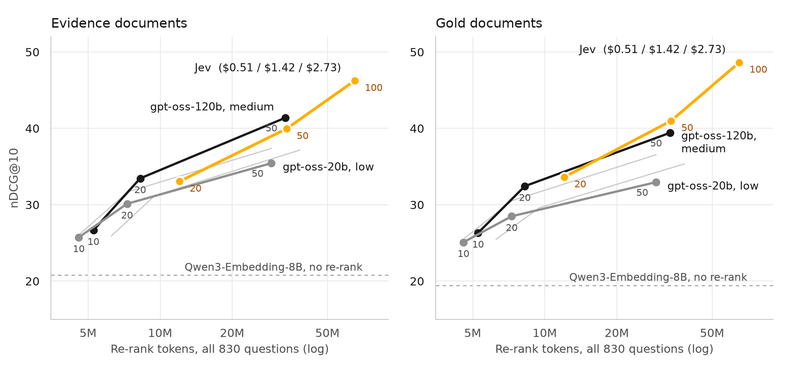

A Decision Model as a Directed Reasoner: Jev on BrowseComp-Plus
Re-ranking usually means asking an LLM to read documents and write out an ordering, or running a dedicated cross-encoder. I wanted to test a third option: a decision model, which generates no text at all. It takes some text, takes a question with fixed options, and returns a probability for each option. Ranking documents looks like exactly that shape of problem, so I tried it on a benchmark where the published baselines are hard to argue with.
The model is Jev, from TypeSafe. The benchmark is BrowseComp-Plus: 830 hard research questions over a fixed corpus of about 100,000 web documents, with human-labelled evidence documents. The comparison is Rerank Before You Reason, which re-ranks the same embedding results with gpt-oss models.
Usually I would use an agentic search model for this: one that issues its own searches, reads what comes back, and returns a ranked list of documents, like the 4B model from my earlier post. Questions like these are multi-hop, and that loop is built for them. This experiment deliberately leaves the loop out: one fixed query, no follow-up searches, and a decision model choosing among the documents it is shown.
The headline result: re-ranking the top 50 embedding results with Jev takes evidence nDCG@10 from 20.77 to 39.94 and gold nDCG@10 from 19.45 to 40.99, for $1.42 across all 830 questions. At matched depth that sits level with the best gpt-oss setting in the paper: slightly behind on evidence, slightly ahead on gold. Going to the top 100 reaches 46.24 evidence and 48.63 gold for $2.73, a depth the paper did not test.
I also ran a 4B decision model I had fine-tuned on search decisions through the same test. It showed no gain whatsoever, and the reason turned out to be more useful than the number. Everything here measures retrieval only. I have not yet run an agent on top of these rankings, so nothing below is a claim about answer accuracy.
Where the method came from
This started as a smaller experiment. PageIndex finds pages in long documents by having an LLM agent read a tree of section summaries and decide where to look. I replaced the agent's search with Jev: walk the tree one Choice at a time, then ask one more Choice over the full text of the candidate pages. A single LLM call then answered from the top pages.
On PageIndex's 62-question benchmark, the agent answered 61 correctly at $0.00197 per question, and the Jev pipeline answered 58 at $0.00090, both before the one-off cost of indexing. That is a small benchmark, and I tuned on it, so I treat it as a reason to look further rather than as a result. It did teach me the two things I carried forward: a second pass over full text is worth paying for (it put the right page first on 47 of 62 questions, against 35 without it), and a Choice needs a "none of these" option, because without one the model must spread all its probability over the candidates even when none of them is right.
The setup
BrowseComp-Plus labels two kinds of relevant document for each question. Evidence documents are needed to answer it; gold documents also contain the final answer. Scoring against those labels needs no LLM judge, which makes the retrieval-only numbers deterministic. I report nDCG@10 and Recall@5, the same metrics as the paper.
The first stage has to be strong, because a re-ranker can only reorder what it receives. I reproduced two published retrievers before touching anything else, using the full question as the query:
| First stage | Evidence nDCG@10 | Evidence R@5 | Evidence R@100 | Gold nDCG@10 |
|---|---|---|---|---|
| BM25, published | 1.63 | 1.18 | 4.66 | 1.66 |
| BM25, mine | 1.71 | 1.35 | 4.92 | 1.69 |
| Qwen3-Embedding-8B, published | 20.26 | 14.53 | 47.73 | 19.46 |
| Qwen3-Embedding-8B, mine | 20.77 | 14.92 | 48.54 | 19.45 |
Published rows are from the BrowseComp-Plus leaderboard results.
Both land within about a point. My embedding run also matches the first-stage row in the re-ranking paper (20.74 / 14.91), so all the re-rankers below start from the same place. BM25's top 100 holds under 5% of the evidence, so re-ranking it would be pointless. Everything below re-ranks Qwen3-Embedding-8B.
The method: one Choice at a time
Each request has the question as its state, and one Choice whose options are documents:
state: "Question: <the full BrowseComp question>"
instructions: "Which document contains the answer to this question?"
options: "Document 1:\n<title>\n<first 2,000 characters>"
...
"None of these documents contains the answer"Two thousand characters is about 512 tokens, roughly what the gpt-oss re-rankers saw. Jev accepts around 30,000 tokens per request, so a hundred such documents do not fit in one Choice. They go through a tournament instead:
while more than 12 documents remain:
split them into groups of 10, in their current order
ask one Choice per group
keep each group's top 3 (first round), then top 4 (second round)
ask one final Choice over what remains
order = final Choice, then later-round eliminations, then earlier ones
(within a round by group probability, ties by first-stage rank)That takes 3, 8 and 14 requests per question at depths 20, 50 and 100. Documents below the re-rank depth stay where the first stage put them. There is no model output to parse: an ordering comes directly from the returned probabilities.
Results at matched depth
"Depth" is how many of the top first-stage documents get re-ranked. The paper tests 10, 20 and 50, so depths 20 and 50 are the fair comparison. The paper's re-ranker is listwise RankLLM with a window of 20; I show its strongest and weakest settings at each depth.
| Depth / re-ranker | Evidence nDCG@10 | Evidence R@5 | Gold nDCG@10 | Gold R@5 |
|---|---|---|---|---|
| No re-rank | 20.77 | 14.92 | 19.45 | 19.00 |
| 20 · gpt-oss-20b, low | 30.12 | 22.74 | 28.49 | 27.84 |
| 20 · gpt-oss-120b, medium | 33.45 | 25.51 | 32.43 | 31.21 |
| 20 · Jev | 33.05 | 24.07 | 33.61 | 30.95 |
| 50 · gpt-oss-20b, low | 35.44 | 27.20 | 32.95 | 32.60 |
| 50 · gpt-oss-120b, medium | 41.38 | 32.17 | 39.41 | 38.40 |
| 50 · Jev | 39.94 | 30.21 | 40.99 | 38.87 |
| 100 · Jev | 46.24 | 36.20 | 48.63 | 47.35 |
gpt-oss rows are from Tables 1 and 5 of arXiv 2601.14224. Their "low" and "medium" are reasoning effort.

Against gpt-oss-120b at medium effort, Jev is 0.4 and 1.4 points behind on evidence nDCG@10 and 1.2 and 1.6 points ahead on gold. I would not read a winner into gaps that size. I have per-question rankings only for my own runs, so this comparison sets my numbers beside the paper's averages rather than pairing them. What I am comfortable saying is that Jev is in the same range as the paper's best setting, and above its other three settings at both depths on all four metrics.
Depth keeps paying. Each step from 20 to 50 to 100 adds about six or seven points of evidence nDCG@10, which fits the paper's own trend. Depth 100 has no gpt-oss row beside it, so it says what deeper re-ranking is worth for Jev, not that Jev beats anything at that depth.
Paired against the first stage
Against the first stage I do have per-question rankings, so I can pair them. These are bootstrap intervals over the 830 questions, with 2,000 resamples.
| Jev minus first stage | Depth 20 | Depth 50 | Depth 100 |
|---|---|---|---|
| Evidence nDCG@10 | +12.28 [11.01, 13.60] | +19.17 [17.61, 20.79] | +25.46 [23.70, 27.33] |
| Gold nDCG@10 | +14.15 [12.50, 15.84] | +21.53 [19.44, 23.62] | +29.17 [26.93, 31.51] |
| Evidence R@5 | +9.15 [8.07, 10.31] | +15.29 [14.00, 16.59] | +21.28 [19.80, 22.81] |
| Gold R@5 | +11.95 [10.06, 13.92] | +19.87 [17.60, 22.19] | +28.35 [25.86, 31.03] |
| Questions better / worse (evidence nDCG@10) | 447 / 59 | 537 / 73 | 610 / 66 |
At depth 100, evidence nDCG@10 improves on 610 questions and worsens on 66. Every interval is well clear of zero.
What it costs
Jev bills $42 per billion input tokens, with output free. These are metered totals for all 830 questions.
| Depth | Requests per question | Input tokens, total | Jev cost, total | Per question |
|---|---|---|---|---|
| 20 | 3 | 12.0M | $0.51 | $0.00061 |
| 50 | 8 | 33.7M | $1.42 | $0.00171 |
| 100 | 14 | 64.9M | $2.73 | $0.00328 |
The token counts alone are not the advantage. At depth 50 gpt-oss-120b uses 28.3M input and 5.0M output tokens, so 33.3M in total against Jev's 33.7M, and at depth 20 it uses fewer: 8.3M against 12.0M. The tournament re-reads survivors and sends each document in full each round. The difference is what those tokens are. Jev produces no reasoning output to bill, and it answers quickly: the median request took 254 ms, with rounds running one after another. The gpt-oss models are open weights, and the paper reports tokens rather than dollars, so I do not have a fair dollar comparison.
The model that did not work
I then ran the same test on SearchKev, a 4B decision model fine-tuned on about 125,000 search-agent decisions: which query to issue next, whether a document answers a sub-query, whether the evidence is sufficient. It is a separate model from the RL-trained ranker in my earlier post. Same first stage, same wording, same tournament.
At depth 20, it changed nothing:
| Depth 20 | Evidence nDCG@10 | Evidence R@5 | Gold nDCG@10 | Gold R@5 |
|---|---|---|---|---|
| No re-rank | 20.77 | 14.92 | 19.45 | 19.00 |
| SearchKev | 20.77 | 14.57 | 19.39 | 17.99 |
| Jev | 33.05 | 24.07 | 33.61 | 30.95 |
It improved evidence nDCG@10 on 256 questions and worsened it on 262. Identical means could have hidden a real reshuffle, so I looked at the requests themselves. In each first-round Choice, which option position won?
| First-round Choices (1,660) | 1st | 2nd | 3rd | 4th | 5th | 6th | 7th | 8th | 9th | 10th |
|---|---|---|---|---|---|---|---|---|---|---|
| SearchKev | 53 | 107 | 103 | 125 | 157 | 178 | 185 | 221 | 263 | 268 |
| Jev | 320 | 243 | 182 | 156 | 157 | 121 | 116 | 112 | 139 | 114 |
SearchKev's probabilities were also close to flat: a median top probability of 0.15, where uniform over eleven options is 0.09. Its wins climb steadily with position, so it was favouring whichever document came last. The options are in first-stage order, so that promotes weaker documents about as often as it fixes anything. That accounts for the net zero.
My reading of the cause is the training data. The longest question branch in SearchKev's training set, instructions and all options together, is 490 characters. Here one Choice carries about 20,000 characters, around forty times longer than anything it trained on. It had been taught to choose among short queries and verdicts, and the architecture keeps options in the question branch. So this test asked it for something outside its training. I have not confirmed that explanation, and a shorter-option test would be the way to do it. The depth-50 run also stopped at 568 of 830 questions after repeated request failures, and I did not run depth 100, because depth 20 had already answered the question.
The lesson I take from this is narrow. Fine-tuning on search-shaped decisions did not produce a re-ranker for long documents. SearchKev's score on its own held-out search data, 17 points above the model it started from, would not have told me that. The win-by-position table did.
What this does not show
- Answer accuracy. This is the largest gap. Better rankings for one fixed query do not automatically mean a better research agent, which writes its own queries, about 22 per question for GPT-5 on this benchmark.
- Whether Jev reads position. Jev's wins lean toward early options. Good documents do sit early after a strong first stage, but I presented every Choice in first-stage order, so I cannot separate content from position without a shuffled-order run. Some of Jev's gain may come from reading the order it was given.
- A like-for-like method. The paper uses one listwise model over a sliding window; I use a tournament of Choices with a none option. Both see about 512 tokens per document, but the truncation is not identical.
- Precise ties. Jev returns probabilities to two decimals, so documents in a group sometimes tie, and ties fall back to first-stage order.
- Full documents. Median documents run about 5,000 characters, so Jev read less than half of a typical one. Longer options fit its limits and might help, at higher cost.
Where this goes next
The next test is end to end. The BrowseComp-Plus leaderboard gives a clean baseline: GPT-5 with its standard search tool scores 71.69% with Qwen3-Embedding-8B and 80% with the best single-retriever entry using the same setup. Putting a Jev re-rank behind that same search tool changes one component, and the published per-question run gives me something to pair against. I would also run the shuffled-order check before trusting the depth curve any further.
The point
On retrieval metrics, a model that only outputs probabilities can do the job of a reasoning re-ranker on a hard benchmark. Asked one Choice at a time, Jev roughly doubled nDCG@10 over a strong embedding retriever, landed in the same range as the best published gpt-oss setting at matched depth, and cost under three dollars for 830 questions at the deepest setting.
The same method with a fine-tuned 4B model produced no gain, and only the raw request logs showed why. If you try this yourself, log every probability, and check what your model does with position before you believe the ranking.